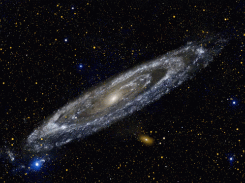
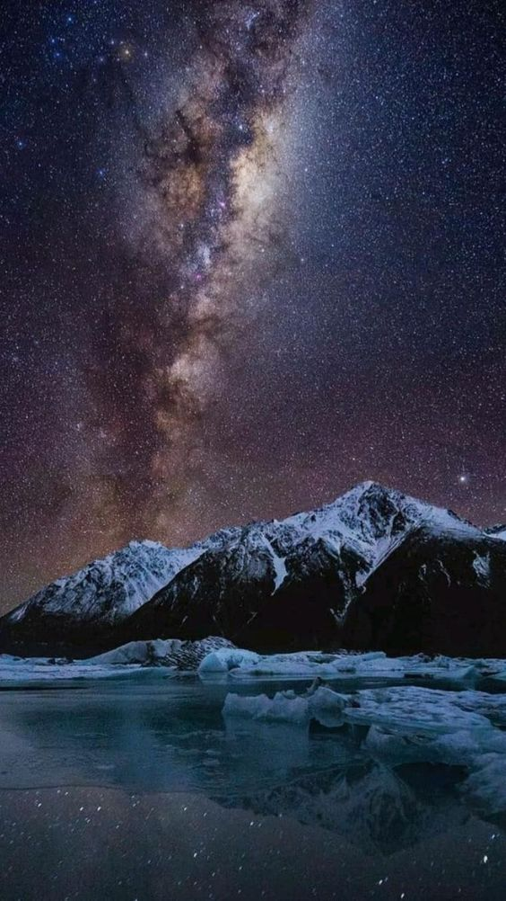
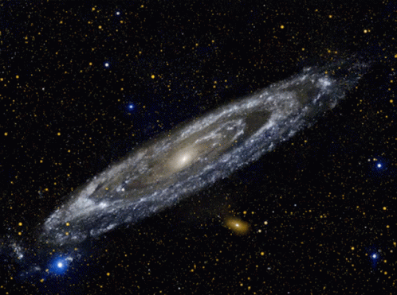
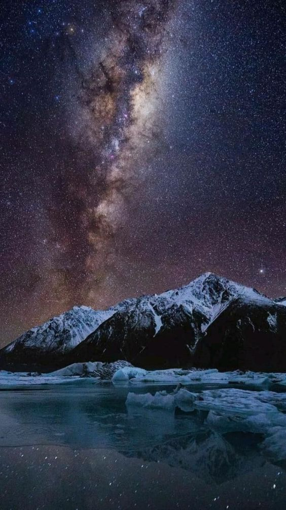

Qu'est-ce que la "Voie Lactée"?
 




La Voie lactée est le nom de la galaxie dans la quelle nous vivons, c’est au seins de cette
dernière que se trouve le Système solaire.
Elle est de type spiral et s'étend sur environ 100.000 années-lumière pour 100 à 400
milliards d'étoiles et au moins autant de planètes.
Depuis la Terre, on ne peut observer qu'une coupe transversale de la Voie lactée,
épaisse de 1.000 à 3.000 années-lumière. Elle apparaît alors comme une traînée de lumière
blanche laiteuse parcourant le ciel, d'où son nom « Voie Lactée ». Observée dès l'Antiquité
, elle est ainsi baptisée d'après la mythologie grecque, selon laquelle Héra aurait arraché Héraclès,
fils de Zeus, de son sein, faisant ainsi gicler le lait sur la voûte céleste.
Et pour parler un peu de son histoire:
C’est deux grecs de l’époque, Anaxagore et Démocrite, qui émettent l’idée
que la Voie lactée était peut-être formée d’étoiles. Malheureusement, la pensée grecque
était dominée par l'importance d’Aristote qui l’interprétait comme une nébuleuse au fin
fond de l’atmosphère. Cette idée allait dominer la pensée européenne pendant prés de deux
millénaires et seuls quelques savants arabes proposèrent à nouveau une Voie lactée formée d’étoiles.
En 1609, grâce à Galilée (le fondateur de la science moderne), la nature de la Voie lactée fut établie
une fois pour toutes. Après avoir découvert les satellites de Jupiter, les phases de Vénus, les
cratères de la Lune, les tâches du Soleil et une formation étrange autour de Saturne, Galilée tourne sa
lunette astronomique vers la Voie lactée et y découvre une ribambelle d’étoiles dans toutes les directions.
Il ne s’agit donc pas d’une nébuleuse, mais bien d’un ensemble d’étoiles en nombres considérables que
l’œil nu ne peut pas discerner. Galilée découvre aussi dès 1610 que la Voie lactée est un nuage très
dense d’étoiles mais considère à tort qu'elle n'est pas constituée de gaz.
Le centre, justement, aussi appelé bulbe galactique, est gonflé par une grande densité d'étoiles et mesure 10.000
années-lumière de diamètre. De plus, au cœur de la galaxie se tapit Sagittarius A*, un trou noir supermassif de
plus de quatre millions de masses solaires. L'ensemble de la galaxie est entouré d'un halo, qui serait constitué
d'étoiles, de gaz et de matière noire.
sion la distance à la Terre d'une dizaine de Céphéides de notre Voie lactée, environ 26 000 années-lumière, nous
sommes donc assez loin du centre.
Nous sommes donc arrivé a la conclusions que La Voie lactée était plus précisément une galaxie spirale barrée,
c'est-à-dire qu'au milieu de la galaxie se trouve une barre d'étoiles de laquelle partent quatre bras majeurs.
L'existence de ces bras a été découverte en 1951 par Edward Mills Purcell et Harold Ewen grâce à
des mesures en radioastronomie.
Le centre, justement, aussi appelé bulbe galactique, est gonflé par une grande densité d'étoiles et
mesure 10.000 années-lumière de diamètre. De plus, au cœur de la galaxie se tapit Sagittarius A*, un trou noir
supermassif de plus de quatre millions de masses solaires. L'ensemble de la galaxie est entouré d'un halo, qui serait
constitué d'étoiles, de gaz et de matière noire.
Où se situe notre galxie dans l'espace?
Car oui, avec l'apparition de nouveaux telescopes plus precis, d'autres galaxies ont ete decouvertes!
La Voie lactée appartient au Groupe local, un amas d'une soixantaine de galaxies mesurant 10
millions d'années-lumière de diamètre, qui contient également, la galaxie d'Andromède. Le Groupe
local fait quant à lui partie du superamas de la Vierge, lui-même inclus dans une structure encore
plus grande, un superamas appelé Laniakea.